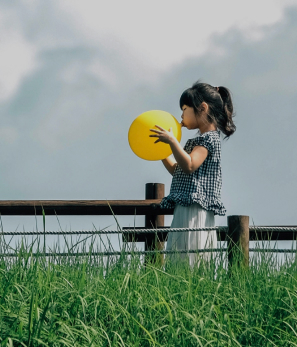
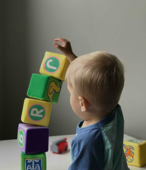
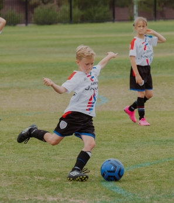
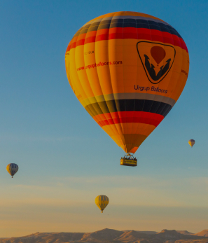
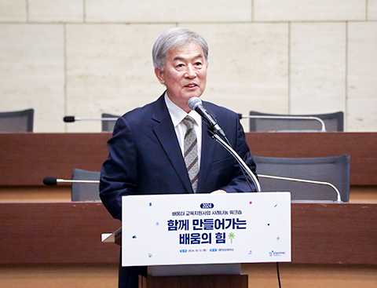
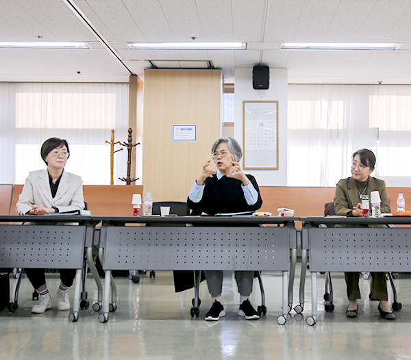
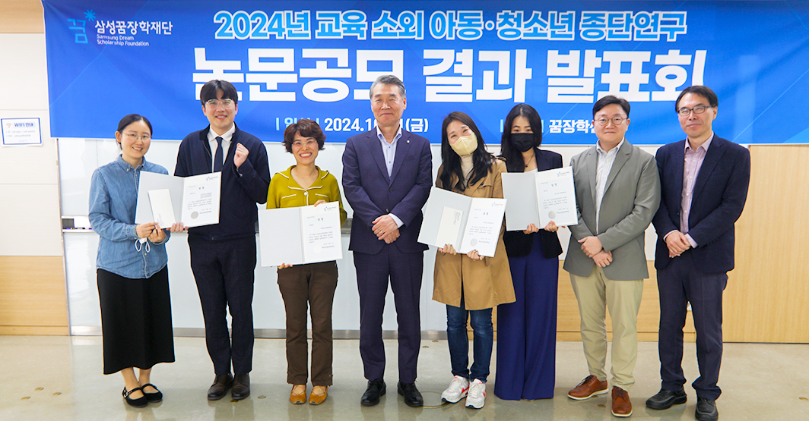

사람이 있는 곳을 지원하며,
사람을 통해 사람을 키웁니다.
장학생들의 다양한 잠재력을 이끌어낼 수 있는 교육기회를 제공합니다.
더불어 성장하는
배움 공동체 구현
다양한 형태의 교육소외 극복을 통해 모든 학생들의 꿈을 지원합니다.
-

멘토링
꿈장학사업청소년들이 멘토 선생님의 교육적, 정서적 지지를 받으면서 자신의 꿈을 찾고 재능을 개발할 수 있도록 지원하는 사업입니다.
자세히보기 -

배움터
교육지원사업재단 출신 꿈장학생 중 우수한 대학(원)생을 선발하여 우리 사회의 각 분야에서 리더로 성장할 수 있도록 지원하는 사업입니다.
자세히보기 -
리더육성
장학사업교육지원이 부족한 아동, 청소년을 위하여 지역의 교육복지 안전망을 구축할 수 있도록 지원하는 사업입니다.
자세히보기 -
글로벌
장학사업불가피하게 흩어진 한인후손과 개발도상국 현지 아동 · 청소년을 교육적으로 지원하고, 글로벌 리더로 양성하는 사업입니다.
자세히보기 -

특별사업
사회전반에 교육복지 인식을 확산하고자, 여러 기관들과 연계하여 더 많은 아이들에게 교육복지 혜택을 지원하는 사업입니다.
자세히보기 -

장학신청
삼성꿈장학재단은 청소년들이 자신의 꿈을 찾고 성장할 수 있도록 장학생을 선발하여 지원합니다.
자세히보기
장학재단 활동
-
 멘토링 꿈장학사업
멘토링 꿈장학사업
꺾이지 않는 도전정신으로 그려낸 70개의 꿈
지난 11월 2일(토), 재단 꿈장학센터에서 ‘장학생·멘토와 함께하는 2024 꿈장학 공모전 시상식’이 열렸다. 이날 행사는 인사말씀과 수상자 시상, 심사 총평, 수상자 소감 발표, 최우수 영상 상영 순으로 진행됐으며, 재단의 정기영 이사와 우진중 사무총장, 신달자 심사위원장을 비롯해 멘토 선생님과 장학생 수상자, 가족 등이 함께했다.
2024-11-04 -
 배움터 교육지원사업
경험을 나누며 ‘배움’을 함께 만들어가다 2024 배움터 교육지원사업 사례나눔 워크숍 “함께 만들어가는 배움의 힘”
삼성꿈장학재단은 지난 10월 17일 대한상공회의소에서 ‘2024 배움터 교육지원사업 사례나눔 워크숍’을 진행했다. 이번 워크숍은 재단 이광호 이사의 인사말을 시작으로 개회 및 포럼, 2025년 배움터 교육지원사업 공모 안내, 사례나눔 및 워크숍 순으로 진행됐다. 먼저 이광호 이사는 아이들의 미래를 밝혀나가는 선생님들에게 감사의 마음을 전하며, “합창의 하모니를 통해 협력을 배운 아이들, 지역사회와 함께 성장하는 아이들 등 선생님들의 따뜻한 손길과 헌신적인 노력 덕분에 아이들이 자신의 꿈을 펼치고 세상을 향해 나아가는 용기를 얻었을 것이라 믿는다.”라고 말했다. 또한, “오늘 포럼을 통해 이주배경 아동·청소년의 현황을 함께 살펴보고, 이 학생들을 어떤 관점에서 만나면 좋을지도 함께 고민해보는 시간이 되었으면 좋겠다.”라고 전했다.
2024-10-18 -
 멘토링 꿈장학사업
말할수록 선명해지는 우리들의 소중한 꿈 이야기 2024 꿈장학 진로발표대회
삼성꿈장학재단은 ‘2024년 꿈장학 진로발표대회’를 10월 26일 토요일에 재단 연수실에서 개최했다. 이번 대회는 스스로 진로 계획을 수립하고 발표하는 경험을 통해 장학생들에게 적극적인 진로탐색·개발과 표현의 기회를 제공하기 위해 마련됐으며, 서류 심사를 통과한 꿈장학생 23명이 발표자로 참여했다. 또한, 오정숙 교수(대구대학교)와 정경운 교수(전남대학교)가 심사를 맡아 진로 탐색·계획의 구체성, 발표능력, 발표태도, 성장가능성 등을 기준으로 평가했다.
2024-10-28 -
꿈장학 공모전 당선작
3년의 동행, 제자에게 인생을 배우다 김해룡 선생님(2018~2024 꿈장학 멘토)
코로나19로 인하여 정상적인 수업이 어려웠던 2022년 3월 어느 날, 마스크로 가리어진 얼굴 사이로 커다란 눈이 초롱초롱 빛나던 하진이를 만나게 되었다. 학생들의 진로 진학 상담과 ‘진로와 직업’ 수업을 맡은 나에게 유독 질문이 많았던 한 아이. 그 아이가 바로 나의 멘티 하진이였다. 수업 시간에 답변해 주지 못한 내용은 따로 진로상담 시간을 잡아서 설명해주다 보니 자연스럽게 하진이의 사정을 알게 되었다. 초등학교 1학년 때 부모님의 이혼으로 어머니와 오빠, 하진이 세 식구가 경제적으로 어려움을 겪으며 힘든 생활을 하고 있다는 것을 털어놓았다. 주로 어머니가 편의점 아르바이트를 해 생계를 유지하고 있었으며, 좁은 집에서 제대로 된 공부방도 없이 하루하루 힘들게 견디고 있었다. 하지만 그런 상황에서도 항상 예의 바르고 맑은 눈웃음을 가진 하진이었다.
2024-11-06 -
 배움터 교육지원사업
배움터 청소년 밴드가 직접 만들고 부르는 노래 2024 배움터 청소년 창작곡 밴드대회
삼성꿈장학재단은 ‘2024 배움터 청소년 창작곡 밴드대회’를 11월 2일 토요일에 서울생활문화센터 서교스퀘어에서 개최했다. 올해 처음 진행된 이 대회는 배움터 청소년 밴드팀의 성장을 확인하고 청소년 창작 문화의 확산에 기여하기 위해 마련됐으며, 전국 각지 배움터의 총 17개 밴드팀 중 1차 영상심사를 통과한 총 8개의 청소년 밴드팀이 자작곡을 가지고 참여했다. 또한, 심사위원으로 인디밴드 ‘브로콜리너마저’의 멤버 윤덕원 님과 정경운 전남대학교 교수가 참석해 가사 전달력, 곡의 정서, 팀워크 등을 기준으로 공정하게 평가했다.
2024-11-04